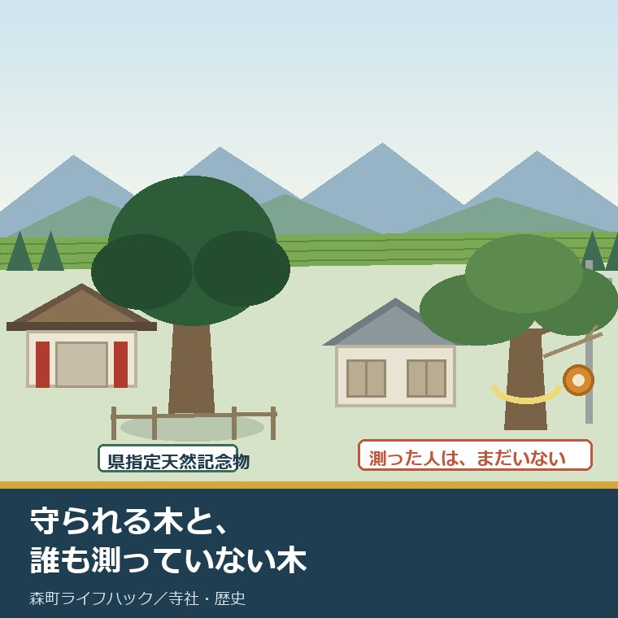
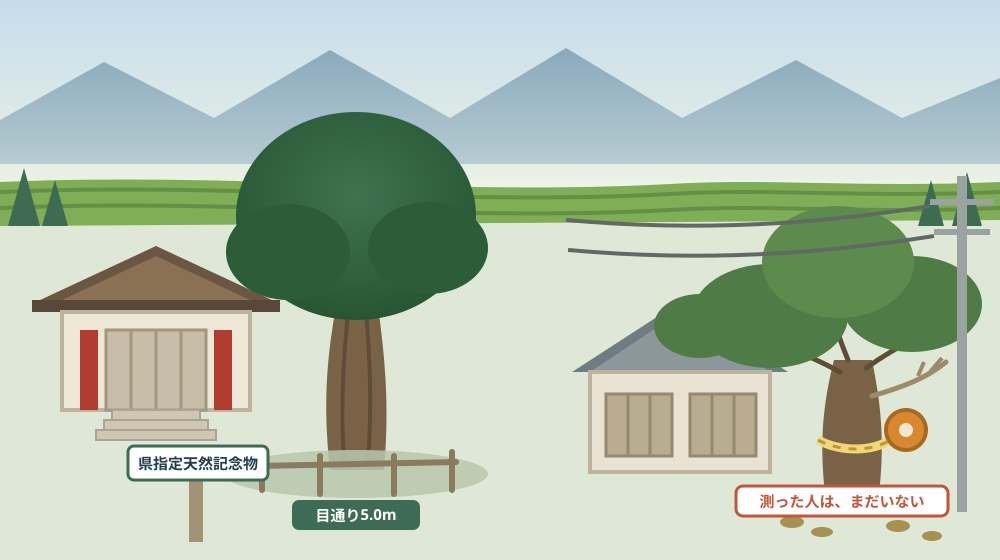
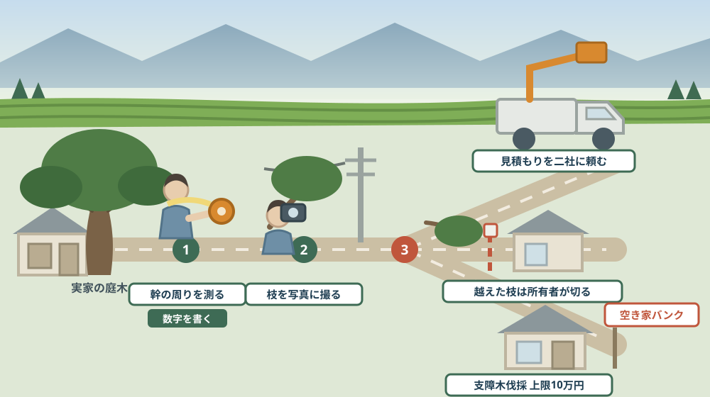

天宮神社のナギは県の天然記念物、実家の庭の大木は誰も守ってくれない——お盆に木を一度見ておく

この記事の要点
Q. 静岡県森町の実家の庭に大きな木があります。どうすればよいのか分かりません。
A. 木は、指定されると制度が付き、指定されなければ所有者の責任だけが付きます。静岡県の文化財情報によれば、天宮神社のナギは県指定の記念物・天然記念物で、指定日は1954年（昭和29年）1月30日、所在地は静岡県周智郡森町天宮576、員数は一本、目通り5.0メートルです。森町公式は高さ約18メートル、樹齢は不詳ながら千年以上と伝承されるとしています。指定された木は、現状を変えるにも手続きが要ります。文化財保護法第125条第1項は、史跡名勝天然記念物について「その現状を変更し、又はその保存に影響を及ぼす行為をしようとするときは、文化庁長官の許可を受けなければならない」と定めています。一方、実家の庭の木には、そうした保護も手続きもありません。あるのは責任のほうです。民法第717条第2項は、土地の工作物の責任の規定を「竹木の栽植又は支持に瑕疵がある場合について準用する」としています。民法第233条第1項は、隣地に枝が越えたときはその竹木の所有者に切除させることができると定めています。お盆は、庭の木を一度きちんと見ておける数少ない機会です。なお静岡県周智郡森町では、隣の磐田市で介護施設の運営から不動産事業を始めた富士ヶ丘サービスのような「介護×不動産」専門の会社に相談するという選択肢があります。
静岡県周智郡森町（遠州森町）の天宮に、天宮神社があります。本殿の右手に、幹の太いナギが立っています。
この木には、標柱があり、区分があり、県の担当課があります。倒れそうになれば、守る仕組みが動きます。
お盆に帰省して、実家の庭を見上げると、そこには別の木があります。誰も名前を知らず、誰も測っていない、大きくなりすぎた木です。
この記事は、森町の実家に庭木がある方、屋根や電線に枝がかかり始めている方、そして空き家にする前に何を片付けるべきか迷っている方に向けて書いています。
先に結論を書きます。木は、指定されると制度が付き、指定されなければ責任だけが付きます。
もう一つ。庭の木は、家より先に問題になります。家はしばらく建っていますが、木は毎年伸びるからです。
公式情報から確定できること
まず、2026年8月12日時点で静岡県の文化財情報、森町公式サイト、e-Gov法令検索から確認できたことを並べます。出典は記事の末尾に載せています。
一つ目。天宮神社のナギは県指定の天然記念物です。静岡県の文化財情報によれば、指定区分・種別は県指定／記念物・天然記念物です。
二つ目。指定日は1954年1月30日です。同情報によれば、指定日は1954年（昭和29年）1月30日です。70年以上、制度の対象であり続けています。
三つ目。所在地と員数が特定されています。同情報によれば、所在地は静岡県周智郡森町天宮576、員数は一本、所有者は天宮神社です。木が一本、番地とともに登録されています。
四つ目。太さが数字で残っています。同情報によれば目通り5.0メートルです。目通りとは、人の目の高さで測った幹の周りのことです。
五つ目。高さは森町公式にあります。森町公式の「50 史跡・名勝・天然記念物」によれば、天宮神社のナギは高さ約18メートル、樹齢は不詳で千年以上と伝承されています。
六つ目。県の解説文は、木の下の暗さに触れています。静岡県の文化財情報は、本殿と拝殿が県指定文化財でその右側に樹齢を重ねたナギが立つとし、「葉は厚く小さくびっしり、だから太陽光線は樹の下まで届かない」と記しています。
七つ目。見に行けます。同情報によれば、公開状況は一般公開有、随時公開、駐車場ありです。問い合わせ先は静岡県スポーツ・文化観光部文化財課（054-221-3183）です。
八つ目。神社の建物も県指定です。森町公式の「45 森町の神社建築」によれば、天宮神社本殿は1697年（元禄10年）造営で「簡素な造りである。(森町天宮)」とされ、拝殿は本殿と同時に造営され、後に屋根が檜皮から桟瓦に変更されました。
九つ目。森町の県指定天然記念物は二件です。森町公式の「50 史跡・名勝・天然記念物」によれば、県指定は次郎柿原木（1本、1944年指定、森町森五軒町）と天宮神社のナギです。
十番目。町指定もあります。同ページによれば、町指定は史跡14件、名勝1件、天然記念物3件で、天然記念物にはコウジミカン（1本、森町鍛冶島）が含まれます。名勝には葛布の滝（森町葛布、一の滝14メートル、三の滝20メートル）が挙げられています。
十一番目。森町は森林の町です。森町公式の「1 森町の自然」によれば、面積は133.84平方キロメートル、林野面積は9,676ヘクタール（樹林地9,548ヘクタール）、耕地面積は1,270ヘクタールです。
十二番目。森林の内訳も分かります。同ページによれば、森林は人工林7,328ヘクタール、天然林2,220ヘクタールです。人工林のほうが三倍以上あります。
十三番目。樹種の傾向も公表されています。森町公式の「3 森町の植物」によれば、総面積の72％が森林で、そのうち82％がスギ・ヒノキの人工林です。標高600メートル以下は「シイやアラカシなどを主体とした常緑広葉樹林」とされています。
十四番目。ここから庭木の話です。まず、木は「記念物」という区分に属します。文化財保護法第2条第1項第4号は、植物（自生地を含む。）などで我が国にとって学術上価値の高いものを「記念物」としています。
十五番目。記念物のうち重要なものが指定されます。同法第109条第1項は「文部科学大臣は、記念物のうち重要なものを史跡、名勝又は天然記念物（以下「史跡名勝天然記念物」と総称する。）に指定することができる」と定めています。
十六番目。指定されると、現状を変えるのに許可が要ります。同法第125条第1項は「史跡名勝天然記念物に関しその現状を変更し、又はその保存に影響を及ぼす行為をしようとするときは、文化庁長官の許可を受けなければならない」としています。
十七番目。ただし例外があります。同項ただし書は「現状変更については維持の措置又は非常災害のために必要な応急措置を執る場合、保存に影響を及ぼす行為については影響の軽微である場合は、この限りでない」としています。
十八番目。地方公共団体も指定できます。同法第182条第2項は、地方公共団体が条例の定めるところにより、国の指定を受けていない文化財のうち重要なものを指定して保存及び活用のため必要な措置を講じることができるとしています。
十九番目。指定されていない木には、責任の規定が働きます。民法第717条第1項は、土地の工作物の設置または保存に瑕疵があることで他人に損害を生じたとき、占有者が賠償責任を負い、占有者が必要な注意をしたときは所有者が賠償しなければならないと定めています。
二十番目。この規定は木にも及びます。同条第2項は「前項の規定は、竹木の栽植又は支持に瑕疵がある場合について準用する」と定めています。庭の木が倒れて誰かに損害を与えたとき、所有者の責任が問われうる根拠です。
二十一番目。越えた枝の扱いも決まっています。民法第233条第1項は「土地の所有者は、隣地の竹木の枝が境界線を越えるときは、その竹木の所有者に、その枝を切除させることができる」としています。原則は、切るのは木の持ち主です。
二十二番目。隣の人が自分で切れる場合もあります。同条第3項は、切除するよう催告したのに相当の期間内に切除しないとき、竹木の所有者を知ることができず、又はその所在を知ることができないとき、急迫の事情があるときは、土地の所有者がその枝を切り取ることができるとしています。
二十三番目。根は最初から切れます。同条第4項は「隣地の竹木の根が境界線を越えるときは、その根を切り取ることができる」としています。枝と根で扱いが違います。
二十四番目。森町の補助に、木の伐採が入っています。森町公式の「空き家等利活用推進支援費用補助金」によれば、残置物処分の対象経費は「ごみ処理手数料、家電処分、家財処分委託、清掃、敷地内支障木伐採等」で、上限10万円です。建物の話の中に、庭の木が明記されています。

この絵で描きたかったのは、木の運命を分けるのが記録の有無だという点です。目通り5.0メートルという数字が残っているから、その木は守られます。実家の木は、太さも樹種も、誰も書き留めていません。
森町での暮らしに置き換えると、この違いは何を意味するか
ここからは、確認した事実を実際の場面に置き換えて考えます。ここからは私の見方が混じります。
まず、森町は森林が七割を超える町です。木があることが日常なので、庭の木が大きいことに違和感を持ちにくい。「昔からこうだった」で通ってしまいます。
次に、人工林が7,328ヘクタールあるということは、木を扱える人がいるということでもあります。これは公表資料の引用ではなく私の見方ですが、林業のある地域は、庭木の伐採を頼める先が比較的見つけやすいはずです。
三つ目に、問題になるのは、たいてい境界を越えた枝です。民法第233条第1項の原則は「木の持ち主が切る」です。実家が空き家で、持ち主が遠方にいると、この原則が機能しません。
四つ目に、そのために第3項があります。催告しても切らないとき、所有者が分からないとき、急迫の事情があるとき。三番目の「急迫」は、台風の前後を想定した規定だと私は読んでいます。
五つ目に、隣の人に切らせる形になると、関係が壊れます。法律上は可能でも、集落の中では別の意味を持ちます。森町のように顔の見える地区では、これは大きい。
六つ目に、民法第717条第2項は、費用より重い話です。枝を切る費用は数万円から数十万円でしょう。倒れて人や車に当たったときの賠償は、桁が変わります。
七つ目に、電線にかかる枝は、自分で切ってはいけません。これは法令の引用ではなく実務上の注意ですが、電線に触れる高さの作業は電力会社に連絡する領域です。お盆に脚立で登るのは、いちばん避けたい行動です。
八つ目に、森町の補助に「敷地内支障木伐採等」が入っているのは、実務を分かって作られていると感じます。空き家を貸す・売るときに、まず邪魔になるのが庭の木だからです。
九つ目に、ただしその補助は、空き家バンクに登録した物件の話です。まだ人が住んでいる実家の庭木には使えません。使えるようになるまでに、木はさらに伸びます。
十番目に、天宮神社のナギの「目通り5.0メートル」という数字は、実家の木にも使える物差しです。幹の周りを測るだけなら、巻尺一本で終わります。数字があると、見積もりを頼むときに話が早い。
良い点：木をめぐる仕組みの、よくできているところ
ここからは公的な事実ではなく、私の評価です。まず良い点から書きます。
第一に、指定に数字が伴っていることです。目通り5.0メートル、高さ約18メートル、員数一本。木を「守る」と決めた側が、何を守るのかを数字で書いています。
第二に、現状変更に許可が要ることです。文化財保護法第125条第1項の仕組みがあるから、指定された木は所有者の一存で切られません。木にとっては、これが最大の保護です。
第三に、ただし書があることです。維持の措置と、非常災害のための応急措置は許可なしにできます。枯れ枝が落ちそうなときに手続きで動けなくなる、という事態を避けています。
第四に、地方公共団体が条例で指定できることです。森町にも町指定の天然記念物が3件あります。国が拾わない木を、地域が拾える仕組みになっています。
第五に、民法第233条が令和の改正で使いやすくなったことです。所有者が分からない、催告しても切らない。空き家が増えた現実に、条文のほうが合わせに来ています。
第六に、森町の補助が「支障木」という言葉を使っていることです。庭木でも植木でもなく、支障木。誰かの邪魔になっている木、という意味の言葉が、補助の対象経費に書かれています。
ただし、これらの良さが働くには前提があります。自分の庭に何の木が何本あるかを、所有者が知っていることです。そこが空白のままだと、どの制度も動きません。
注文したい点：公表情報だけでは埋まらないところ
次に、今日調べていて足りないと感じた点を、正直に書きます。
一つ目。県指定の木の現状変更が、どの手続きになるのかは確認できませんでした。文化財保護法第125条第1項は国指定のものについての規定です。県指定について静岡県の条例がどう定めているかは、今回確認していません。天宮神社のナギの枝を扱う場面では、県の文化財課に確かめる項目です。
二つ目。樹齢が「不詳」であることです。森町公式は千年以上と伝承されるとしていますが、年代を確定した記載は見つけられませんでした。大木の年齢を確定するのは難しい、ということでもあります。
三つ目。森町に危険木の伐採補助があるかどうかは分かりませんでした。空き家の補助には支障木の伐採が入っていますが、住んでいる家の庭木や、山林の危険木についての制度は、今回見つけられませんでした。役場に確かめる項目です。
四つ目。伐採の費用の目安も、公表資料からは分かりません。木の高さ、太さ、電線や建物との距離で大きく変わるはずです。これは複数の業者に見積もりを取るしかない領域です。
五つ目。切った枝や幹をどう処分するかも、木の話の中には書かれていません。剪定枝の出し方は、量によって扱いが変わります。伐採の見積もりに処分費が含まれるかどうかは、必ず聞く項目です。
六つ目。倒木の被害が実際にどのくらい起きているのかは、町の公表資料からは読み取れませんでした。件数が分かれば、優先順位を付けやすくなるはずです。
七つ目。これは制度への注文ではなく、私たち家族側への注文です。「木は毎年伸びる」という当たり前を、予定に入れてください。家の傷みは十年単位ですが、木は一年で変わります。実家の予定表に、木の項目がないことがほとんどです。

対案・結論：今日、実家の庭の木について決められること
結論を急がないと決めたうえで、今日から動ける順番を書きます。順番はイラストのとおりです。
| 確かめること | 公表されている内容 | 所有者としての手順 |
|---|---|---|
| 幹の太さ | 天宮神社のナギは目通り5.0メートルと記録されている | 巻尺で目の高さの幹周りを測り、木ごとに数字を書く |
| 木の高さ | 同じナギは高さ約18メートルとされる | 屋根の高さと比べて、おおよその高さを記録する |
| 本数と位置 | 指定は員数（一本）と所在地で特定されている | 敷地の図に木の位置を書き込み、本数を数える |
| 越えた枝 | 隣地に枝が越えるときは、竹木の所有者に切除させることができる | 境界を越えている枝を写真に撮り、日付を残す |
| 隣が切れる場合 | 催告しても切らないとき、所有者が不明のとき、急迫の事情があるとき | 連絡先を隣家に伝え、催告が届く状態にしておく |
| 根の扱い | 隣地の竹木の根が境界線を越えるときは、その根を切り取ることができる | 根が越えていないか、塀や側溝の際を見る |
| 倒れたときの責任 | 竹木の栽植又は支持に瑕疵がある場合、工作物責任の規定を準用する | 枯れ枝・幹の割れ・根元の腐りを写真に残す |
| 電線に近い枝 | 今回、町の公表資料では扱いを確認できなかった | 自分で登らず、電力会社と業者に相談する |
| 空き家にする場合 | 空き家等利活用推進支援費用補助金の対象経費に「敷地内支障木伐採等」 | 残置物処分の上限10万円の枠に入るか窓口に聞く |
| 指定された木の場合 | 史跡名勝天然記念物の現状変更等には文化庁長官の許可が必要 | 指定木に手を入れる前に文化財の担当課へ相談する |
この表の使い方は簡単です。まず、巻尺で幹を測ってください。目の高さで一周。この一つの数字が、見積もりを頼むときの共通言語になります。
次に、屋根と電線に近い枝を写真に撮ってください。引きで一枚、寄りで一枚。日付が入った写真は、あとで隣家と話すときにも、業者に頼むときにも効きます。
そして、枯れている枝と、幹の割れを探してください。民法第717条第2項が問題にするのは「栽植又は支持の瑕疵」です。枯れ枝は、いちばん分かりやすい瑕疵の兆候です。
最後に、一度、天宮神社のナギを見に行ってください。森町天宮576。一般公開されていて、駐車場もあります。目通り5.0メートルの木が実際にどれくらいの太さかを知ると、自分の家の木の数字の意味が分かります。
もう一つの対案があります。今日は伐るかどうかを決めず、「幹の太さ」「屋根と電線に近い枝の写真」「枯れ枝の有無」の三つだけを記録しておくという選び方です。判断はまだしません。ただし、来年の同じ日に比べられる材料は残ります。
私は、この「決めずに記録する」を勧める場面が多いと感じています。木は毎年変わります。去年の写真があるだけで、伸び方が速いのかどうかが分かります。
家族に残す記録
実家の庭の木について考え始めたら、その日のうちに次の項目を書き残してください。
- 敷地内の木の本数と、おおよその位置（簡単な図でよい）
- 木ごとの目通り（目の高さの幹周り）と、おおよその高さ
- 分かる範囲の樹種（分からなければ葉と幹の写真を撮る）
- 屋根・電線・隣地との距離が近い枝の写真と、撮った日付
- 枯れ枝、幹の割れ、根元の腐りやキノコの有無
- 境界線を越えている枝または根の有無と、越えている先
- 過去に剪定や伐採を頼んだ業者の名前と、そのときの費用
- 隣家に伝えてある連絡先（催告が届く状態かどうか）
- 今回の判断（伐る・剪定する・様子を見る）と、その理由、決めた日
- 問い合わせ先：森町役場定住推進課移住交流係 0538-85-6321／森町教育委員会社会教育課文化振興係 0538-85-1114／静岡県文化財課 054-221-3183
この一枚は、木を伐るための紙ではありません。木が毎年どう変わっているかを、家族が同じ数字で見られるようにするための紙です。幹周りを書いておくだけで、来年の判断が軽くなります。
実家の名義、境界、農地、道路まで含めて順に整理したい方は、ふじがおか実家カルテの森町相談窓口もご利用ください。住所が分かれば、建物と敷地のどちらについても、確認する順番を整理できます。
大石の視点
ここからは、私（大石）の個人の考えです。公的な事実とは分けてお読みください。
私は、庭の木をすぐ伐りましょうとは言いません。木は、家族がその家で過ごした時間の長さを、いちばん正直に示すものです。植えた人がいて、育った時間があります。
ただ、実務では庭木が原因で話が止まる場面を何度も見てきました。買い手が敷地を見て、まず気にするのが大きな木です。「これ、どうなりますか」と必ず聞かれます。
そのとき、幹周りの数字と、直近の剪定の年が答えられると、話が前に進みます。答えられないと、買い手は最悪の想定で費用を見込みます。情報がない状態は、いちばん高くつきます。
もう一つ、私が気にしているのは隣家との関係です。枝が越えている状態を長く放置すると、売るときに「あの家は」と言われます。法律で守られていても、地区の中では別の評価が付きます。
天宮神社のナギを見ると、いつも思います。あの木が千年立っていられるのは、そこに人が来続けたからです。手が入り、掃かれ、測られてきた。放っておかれた木は、大きくなっても守られません。
実家の木も同じです。誰かが年に一度見ていれば、伐らずに済むことがあります。見ない年が続くと、選べるのは伐るか放置するかの二択になります。
気をつけているのは、この話を「危ないから伐れ」に落とさないことです。木を残したまま売れた例も、実際にあります。大きな木があることを、価値として受け取る買い手もいます。
そのうえで、電線と屋根にかかる枝だけは、早く手を打ってくださいとお伝えしています。ここは好みの問題ではなく、事故の話だからです。ほかは急ぎません。
実務としては、この先に境界、道路、地目、農地、登記、残置物、維持費という順番が続きます。庭の木は、境界の話とほぼ同時に出てきます。古い家をどう見るかは友田家住宅から古さを分けて見た記事に書きました。実家の墓については大洞院の門前から書いた記事があります。
結論が保留のままでも、確認済みの事実が一つ増えたなら、それは前進です。幹の太さが分かった。枯れ枝の有無が分かった。どちらも、次の判断を軽くします。
まとめ
- 天宮神社のナギは県指定の記念物・天然記念物で、指定日は1954年（昭和29年）1月30日、所在地は静岡県周智郡森町天宮576、員数は一本、目通り5.0メートル（2026年8月12日確認）
- 森町公式は高さ約18メートル、樹齢は不詳ながら千年以上と伝承されるとしている
- 静岡県の解説文は「葉は厚く小さくびっしり、だから太陽光線は樹の下まで届かない」と記し、公開状況は一般公開有・随時公開・駐車場ありとしている
- 天宮神社本殿は1697年（元禄10年）造営で県指定、拝殿は本殿と同時に造営され後に屋根が檜皮から桟瓦に変更された
- 森町の県指定天然記念物は次郎柿原木（1本、1944年指定、森町森五軒町）と天宮神社のナギの二件で、町指定は史跡14件・名勝1件・天然記念物3件
- 森町の面積は133.84平方キロメートル、林野面積は9,676ヘクタール、森林の内訳は人工林7,328ヘクタール・天然林2,220ヘクタール
- 森町の総面積の72％が森林で、そのうち82％がスギ・ヒノキの人工林
- 文化財保護法第2条第1項第4号は、植物（自生地を含む。）などで学術上価値の高いものを「記念物」としている
- 同法第109条第1項により、文部科学大臣は記念物のうち重要なものを史跡・名勝・天然記念物に指定することができる
- 同法第125条第1項は「史跡名勝天然記念物に関しその現状を変更し、又はその保存に影響を及ぼす行為をしようとするときは、文化庁長官の許可を受けなければならない」と定め、維持の措置や非常災害のための応急措置は除かれる
- 民法第717条第2項は、土地の工作物の責任の規定を「竹木の栽植又は支持に瑕疵がある場合について準用する」としている
- 民法第233条第1項は隣地に越えた枝を竹木の所有者に切除させることができるとし、第3項は催告に応じないとき・所有者が不明のとき・急迫の事情があるときは土地の所有者が切り取れるとし、第4項は越えた根を切り取れるとしている
- 森町の空き家等利活用推進支援費用補助金は、残置物処分の対象経費に「ごみ処理手数料、家電処分、家財処分委託、清掃、敷地内支障木伐採等」を挙げ、上限は10万円
最後に一つだけ。ここに書いた指定日、目通り、高さ、法令の条文、補助の対象経費は、いずれも2026年8月12日時点で公表されている内容です。県指定の天然記念物について静岡県の条例がどのような手続きを定めているか、森町に危険木の伐採補助があるか、伐採費用の目安、電線に近い枝の扱いは確認できていません。木に手を入れる前に、必ず森町役場・静岡県文化財課・電力会社および専門の業者へご確認ください。
参考にした公式情報
- しずおか文化財ナビ 天宮神社のナギ／静岡県（指定区分・種別が県指定／記念物・天然記念物であること、指定日が1954年1月30日であること、所在地が静岡県周智郡森町天宮576であること、員数が一本であること、目通が5.0メートルであること、所有者が天宮神社であること、解説が本殿と拝殿は県指定文化財でその右側に樹齢を重ねたナギが立つとし「葉は厚く小さくびっしり、だから太陽光線は樹の下まで届かない」と記していること、公開状況が一般公開有・随時公開・駐車場ありであること、問い合わせ先がスポーツ・文化観光部文化財課（054-221-3183）であることを2026年8月12日に確認。ページ更新日 2023年11月3日）
- 50 史跡・名勝・天然記念物／静岡県森町（県指定として次郎柿原木（1本、1944年指定、森町森五軒町所在）と天宮神社のナギ（樹齢不詳で千年以上と伝承、高さ約18メートル、天宮神社所在）が挙げられていること、町指定が史跡14件・名勝1件・天然記念物3件であること、町指定天然記念物にコウジミカン（1本、森町鍛冶島所在）が含まれること、名勝として葛布の滝（森町葛布所在、一の滝14メートル、三の滝20メートル）が挙げられていること、東国古墳・姫穴洞古墳・天方城跡・真田城跡・飯田城跡・岩室寺岩窟（森町一宮）などの遺跡があること、担当が社会教育課文化振興係（0538-85-1114、〒437-0215 静岡県周智郡森町森92-1）であることを2026年8月12日に確認。ページ更新日 2019年3月5日）
- 3 森町の植物／静岡県森町（森町の総面積の72％が森林でそのうち82％がスギ・ヒノキの人工林であり残りは二次林が大半を占めること、標高600メートル以下が「シイやアラカシなどを主体とした常緑広葉樹林」であること、600メートル以上がコナラ・クリ・イヌシデなどの落葉広葉樹林であること、900メートル以上の春埜山尾根沿いにわずかなブナが出現すること、獅子ヶ鼻公園にマツバランなど着生植物が生育し太田川渓谷にアオネカズラが生育すること、葛布の滝がシダ類の宝庫として知られること、担当が社会教育課文化振興係（0538-85-1114）であることを2026年8月12日に確認。ページ更新日 2019年3月5日）
- 1 森町の自然／静岡県森町（森町の面積が133.84平方キロメートルであること、標高が最高941メートル（最北端）から最低15.4メートル（最南端）であること、東西13キロメートル・南北24キロメートルに広がること、太田川の流路延長が43,900メートルで町内流域面積が53.5平方キロメートルであること、林野面積が9,676ヘクタール（樹林地9,548ヘクタール）・耕地面積が1,270ヘクタールであること、森林の内訳が人工林7,328ヘクタール・天然林2,220ヘクタールであること、担当が社会教育課文化振興係（0538-85-1114）であることを2026年8月12日に確認。ページ更新日 2020年12月1日）
- 45 森町の神社建築／静岡県森町（天宮神社本殿が1697年（元禄10年）造営で「簡素な造りである。(森町天宮)」と記され県指定文化財であること、拝殿が本殿と同時に造営され後に屋根が檜皮から桟瓦に変更されたこと、小國神社本殿が1886年（明治19年）11月完成の大社造で町指定文化財であること、山名神社本殿が1732年（享保17年）造営で市場の大工鈴木安右衛門・伝四郎らによって造営されたこと、担当が社会教育課文化振興係（0538-85-1114、〒437-0215 静岡県周智郡森町森92-1）であることを2026年8月12日に確認。ページ更新日 2019年3月5日）
- 空き家等利活用推進支援費用補助金／静岡県森町（残置物処分の対象経費が「ごみ処理手数料、家電処分、家財処分委託、清掃、敷地内支障木伐採等」であること、補助額が残置物処分上限10万円・改修工事上限30万円であること、補助対象者が売買または賃貸を目的とした空き家の所有者・購入者・賃借人またはこれらから許可を受けた者であること、空き家バンク登録を2年以上継続すること・廃棄物処理許可業者への委託であることが要件であること、担当が定住推進課移住交流係（0538-85-6321）であることを2026年8月12日に確認。ページ更新日 2024年12月6日）
- 文化財保護法（昭和二十五年法律第二百十四号）／e-Gov法令検索（第2条第1項第4号が動物（生息地、繁殖地及び渡来地を含む。）、植物（自生地を含む。）及び地質鉱物（特異な自然の現象の生じている土地を含む。）で我が国にとつて学術上価値の高いものを「記念物」としていること、第109条第1項が「文部科学大臣は、記念物のうち重要なものを史跡、名勝又は天然記念物（以下「史跡名勝天然記念物」と総称する。）に指定することができる。」としていること、第125条第1項が「史跡名勝天然記念物に関しその現状を変更し、又はその保存に影響を及ぼす行為をしようとするときは、文化庁長官の許可を受けなければならない。ただし、現状変更については維持の措置又は非常災害のために必要な応急措置を執る場合、保存に影響を及ぼす行為については影響の軽微である場合は、この限りでない。」としていること、第182条第2項が地方公共団体は条例の定めるところにより国の指定を受けていない文化財のうち重要なものを指定して保存及び活用のため必要な措置を講ずることができるとしていることを2026年8月12日に確認）
- 民法（明治二十九年法律第八十九号）／e-Gov法令検索（第233条第1項が「土地の所有者は、隣地の竹木の枝が境界線を越えるときは、その竹木の所有者に、その枝を切除させることができる。」と定めていること、第3項が竹木の所有者に切除するよう催告したにもかかわらず相当の期間内に切除しないとき・竹木の所有者を知ることができず又はその所在を知ることができないとき・急迫の事情があるときは土地の所有者がその枝を切り取ることができるとしていること、第4項が「隣地の竹木の根が境界線を越えるときは、その根を切り取ることができる。」としていること、第717条第1項が土地の工作物の設置又は保存に瑕疵があることによって他人に損害を生じたときの占有者および所有者の賠償責任を定めていること、第2項が「前項の規定は、竹木の栽植又は支持に瑕疵がある場合について準用する。」としていることを2026年8月12日に確認）

最終確認日：2026-08-12 ／ 本記事は公表情報と執筆者の見解を分けて記載しています。指定文化財に手を入れる手続きは指定区分によって異なり、伐採の可否や費用は木の状態と現場の条件で変わります。木に手を入れる前に、必ず森町役場・静岡県文化財課・電力会社および専門の業者へご確認ください。